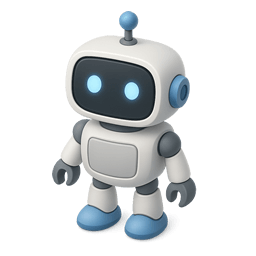
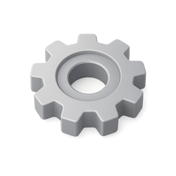

Imagens Desarrumadas!
Troca as peças!
Revela a imagem!
Revela a imagem!
0/5

Fantástico!
Chegaste ao fim do caminho mágico!
És um mestre a resolver quebra-cabeças!
És um mestre a resolver quebra-cabeças!